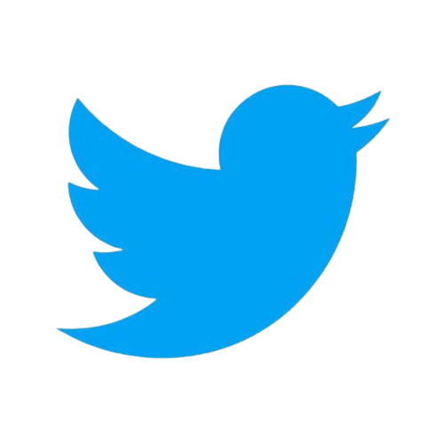
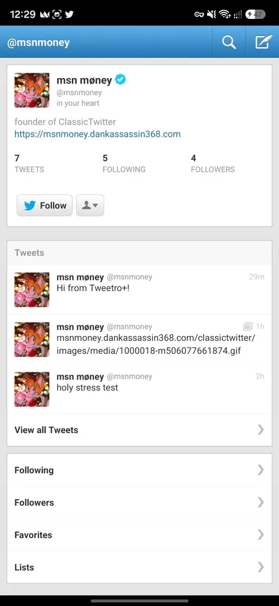
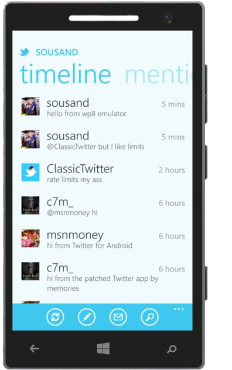
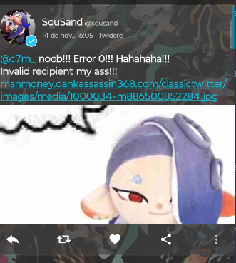
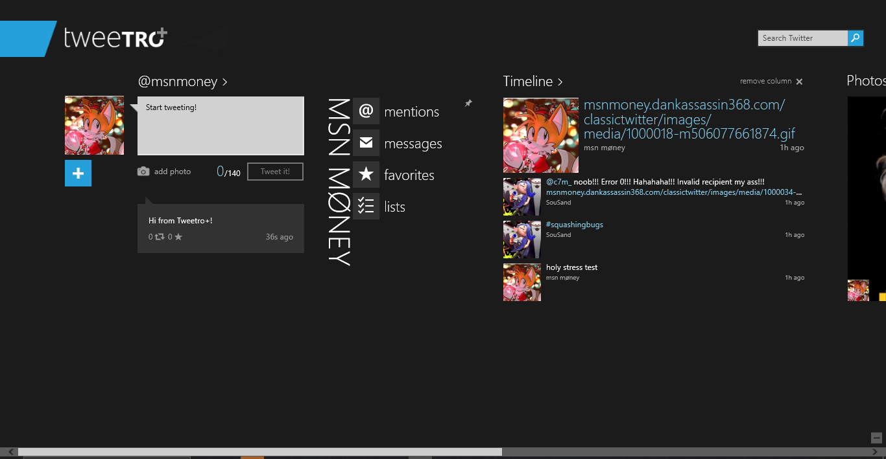
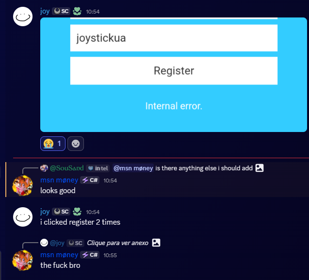

Which device?
ClassicTwitter supports almost all devices!

CLASSIC
twitter


Use old twitter, and be #soretro
"why would i?"


though its not perfect
a few warnings:
to know more, join our server.

Since the project is kinda new, as said previously, there will be bugs! If you want, you can help us by:

Fow now.
"what's next?"